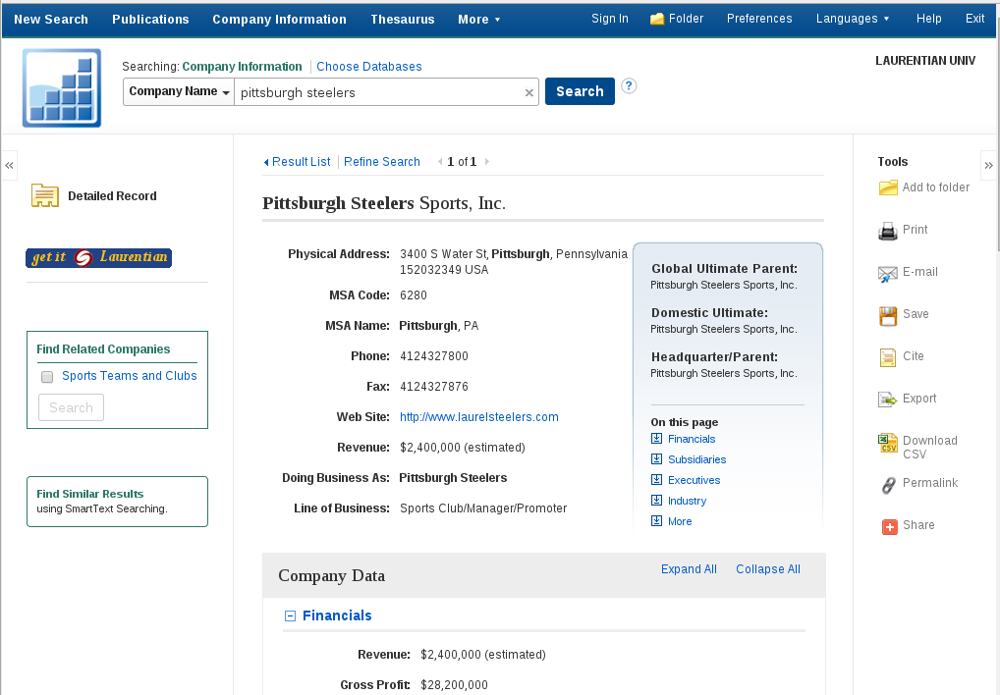
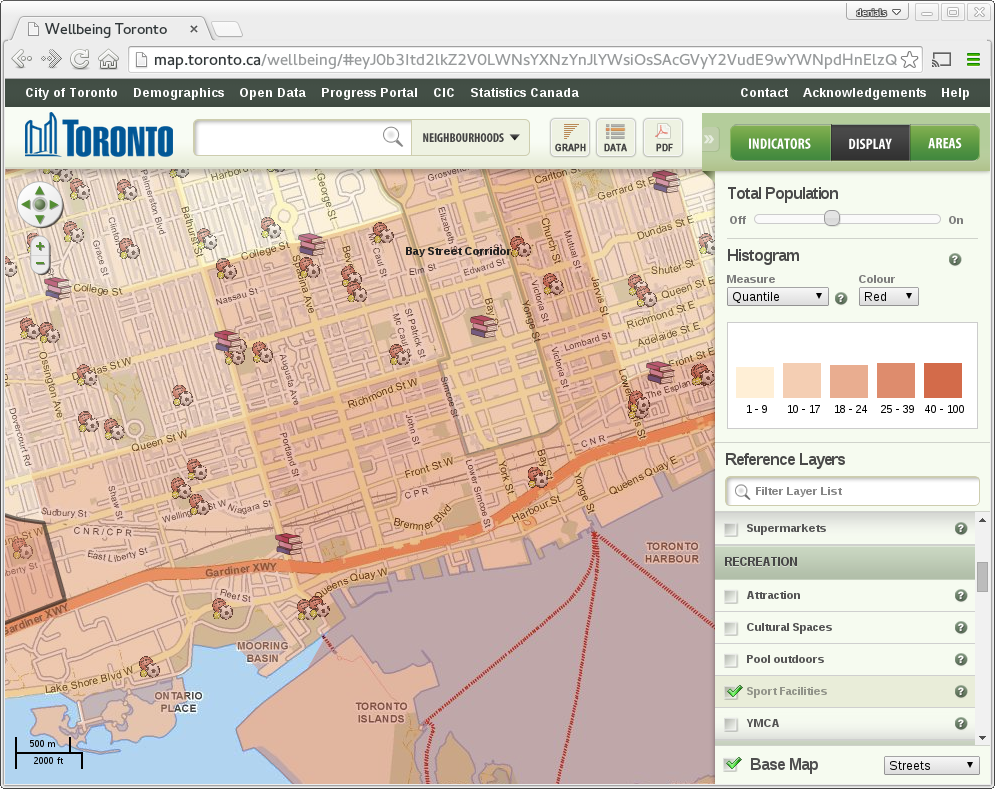

A deeper research bench
SPAD 0100
Systems Librarian, Laurentian University
Sports enthusiasts know the value of teams
- Football, baseball, hockey, obviously...
- but even individual sports have teams behind them.
- Add the library to your personal team!
Photo credit: National Post
{kind=link}
Photo credit: National Post
Elements of administrative success
- Gathering information
- Evaluating information
- Forming a decision
- Communicating the decision
Q: Where does the library fit in?
Mission statement
to organize the world's information and make it universally accessible and useful
The library spent over $1.5 million on electronic resources last year.
Gathering information
- Print collection: books and journals
- Archives: including digitized student newspapers
- Electronic resources: "the dark Web"
- Government documents: legislation, demographics
- ... and almost anything else via inter-library loan (RACER)
Business Source Complete
Evaluating information
- Determining the authority of a source
- Crunching statistical data
Communicating the decision
The population-dense section of downtown Toronto bounded on the west by Bathurst Street, to the east by Simcoe Street, to the north by Queen Street, and to the south by the Lake Ontario waterfront lacks both library facilities and sports facilities...
YAWN
Communicating the decision
Reaching the library
- In person:
- Quick reference available during all library hours
- Random librarians available Monday - Thursday from 9:00 am - 5:00 pm
- Specific librarians available by appointment
- Email: at reference@laurentian.ca (matching "random librarian" hours)
- Online chat: for immediate, general research help
- Monday - Friday: 10:00 am - 10:00 pm
- Weekends: 10:00 am - 5:00 pm
Add us to your team
- We'll help you make the most of your Sports Business Journal subscription
- We'll help you create some awesome visualizations of your data
- We'll ensure you have high quality sources of information
- We'll save you time